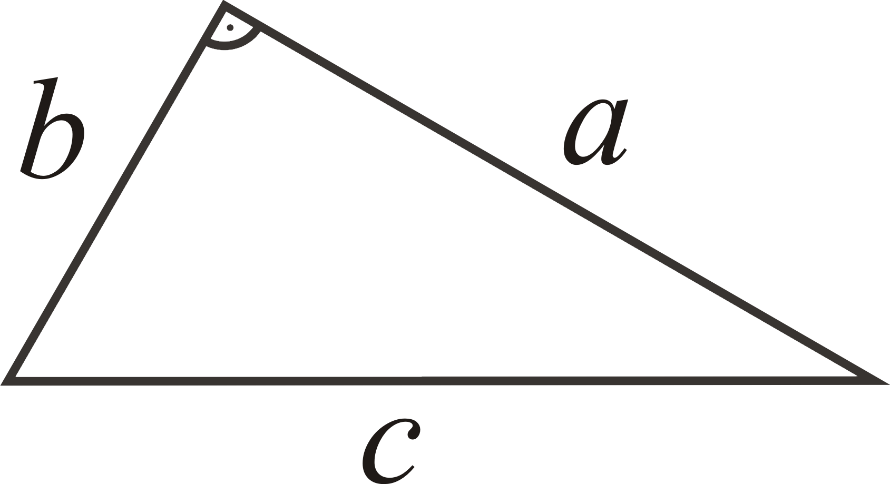

Питагоровата теорема е една от най-важните теореми в евклидовата геометрия, изразяваща връзката между дължините на страните на правоъгълен триъгълник.
Теоремата гласи, че:
В правоъгълният триъгълник катетите, са свързани с хипотенузата в следното просто съотношение:
a2 + b2 = c2,
където c е дължината на хипотенузата (страната срещу правия ъгъл на триъгълника), а a и b са дължините на двата катета (страните, образуващи правия ъгъл).
Изразена чрез площи, теоремата гласи:
За всеки правоъгълен триъгълник площта на квадрата със страна хипотенузата е равна на сбора от площите на двата квадрата със съответни страни катетите.

Теоремата носи името на древногръцкия философ и математик Питагор (570-495 пр.н.е.), на когото се приписва нейното откриване и доказване, въпреки че тя изглежда е известна дълго преди това. Същестуват свидетелства, че още математиците във Вавилон разбират тази зависимост.
Питагоровата теорема свързва както дължините на страните на правоъгълния триъгълник, така и площите на съответните им квадрати, т.е. тя има както площна, така и линейна интерпретация. Част от множеството доказателства на теоремата се базират на първата, а останалите — на втората, като използват различни алгебрични и геометрични методи. Питагоровата теорема може да бъде обобщена по различни начини, включително за многоизмерни или неевклидови пространства, за обекти, които не са правоъгълни триъгълници, и дори за обекти, които изобщо не са триъгълници, а n-мерни тела.